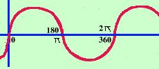

Caratteristiche della funzione y = sen x

Vediamo nei particolari le caratteristiche della sinusoide:
La funzione nell'origine vale 0
e' una funzione limitata: tutti i valori della funzione sono compresi nella striscia orizzontale di piano compresa tra -1 ed 1
La funzione e' periodica di periodo 2
cioe' dopo un intervallo lungo 2
si ripete